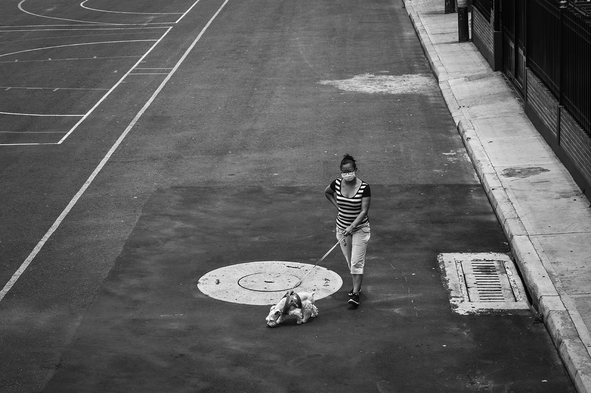
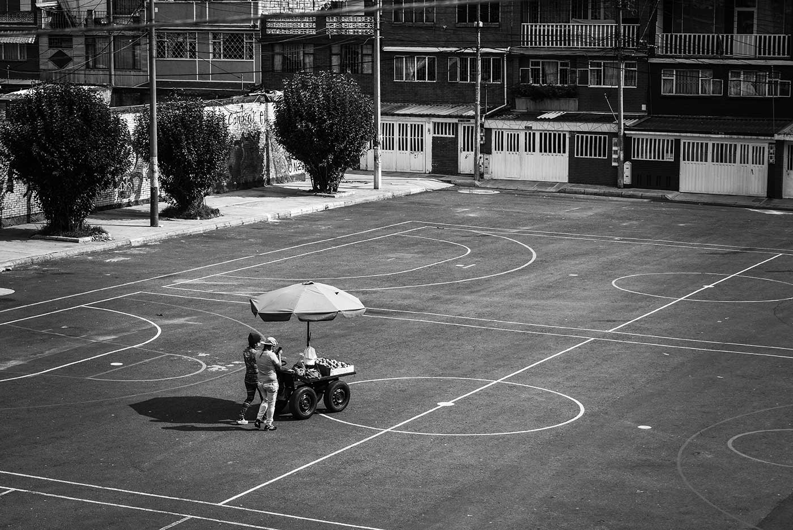
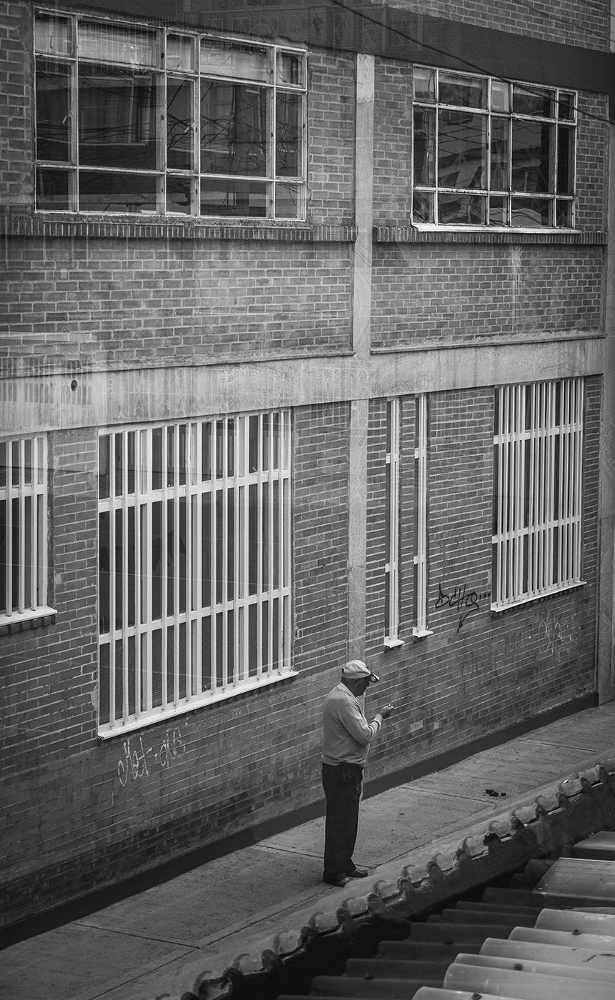
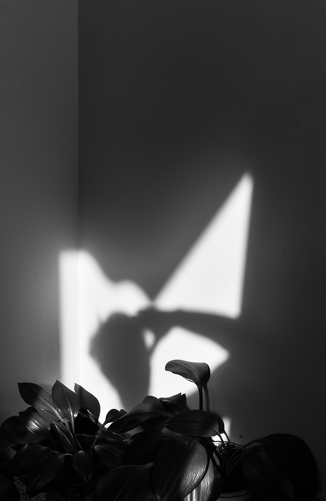

IF
Desde el comienzo del aislamiento todos hemos vivido un cambio en nuestras rutinas. desde mi punto de vista, en mis días normales pasaba poco tiempo en casa, siempre he sido una persona activa, que disfruta del aire libre, que aprecia mucho los buenos días y el sol. Por eso esta época para mí ha sido especialmente complicada. La terraza ha sido mi lugar de “escape”, siempre está sola, es amplia y le llega el sol, ha sido un sitio especial para mí, ya que me ha permitido abrir mi visión, buscar más allá de lo cotidiano. Así descubrí que tiene una vista privilegia, por su ubicación frente a una plazoleta, hay constante flujo de personas y carros, (aun en cuarentena). Pocos alzan su mirada, así que decidí retratar a los caminantes que cruzaban por allí, y así tal vez sentirme más en contacto con el mundo exterior y vivir por un instante sus realidades, permitirme analizar un poco más a fondo las fotografías, el porqué de sus salidas, si es por obligación, necesidad o por querer y si hay uso de implementos de protección.
Por la situación actual, la recomendación por parte del gobierno fue quedarnos en casa, pero por diferentes situaciones no todos podemos cumplir con estas recomendaciones. Por ejemplo, una parte de la población tiene que seguir trabajando y así generar ingresos para sus familias, debido el sector donde vivo hay bastante viviendas, por esto pasan muchos técnicos de servicios de comunicación, ya que la telefonía e internet son fundamentales para sobrellevar esta época. Otro tipo de trabajadores que pude ver fueron los vendedores ambulantes, lo cuales tratan de ganar algo de dinero, algunos venden frutas, verduras, postres, eucalipto etc., en su mayoría vienen desde las afueras de la ciudad o de otros departamentos cercanos para vender sus productos y así no se echen a perder. Muchas veces tienen que bajar sus precios para poder competir con almacenes de cadena, los cuales tiene precios muy bajos.
Aunque en algunas fotografías no se alcanza a ver, varios (no todos) los trabajadores hacen uso de tapabocas y guantes, pues a parte de los problemas de sustento monetario que viven muchas familias, el riesgo sanitario que corren estas personas es muy grande, ya que están en contacto con mucha gente al día, reciben dinero, y están prácticamente todo el día en las calles poniéndose en peligro a ellos mismo y a sus familias de igual manera, pude ver a personas que salen a hacer las compras y a pasear a sus mascotas, igual que algunos trabajadores llevan sus medias de protección. Otra situación que pude ver, fue a las personas que salen sin hacer uso de tapabocas y tal vez, por razones que no son lo suficientemente importante como para exponer la salud de ellos y de las personas que se encuentren a su alrededor, pude ver como algunos niños salían a jugar, como mis vecinos salían a fumar, a simplemente a hablar por teléfono y tomar una cerveza.
En algunos momentos llegue a pensar que ya había capturado todo mi alrededor, que no había donde más explorar, que no había más ideas en este lugar, pero durante el paso de las semanas pude expandir mi visión, ver mi terraza como un lugar de infinitas posibilidades fotográficas, ya sea de forma documental o algo más artístico, así que podría seguir explorando en mi terraza y de igual forma me seguiría sorprendiendo por lo que pueda mirar hacia abajo.
